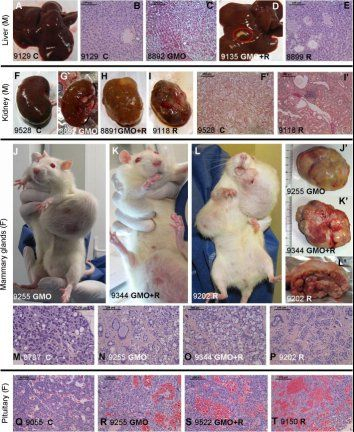
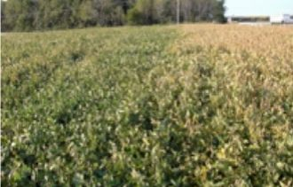

Chapter Five:
Chemical warfare: Herbicides and Pesticides
Just as dangerous as the GMO seeds for rice, corn, soybeans and other crops are the specially paired chemical herbicides that the GMO seeds are specifically manipulated to resist. The most toxic of chemicals are used in the GMO-tied herbicides and pesticides.
Monsanto’s Bid to Round Up the World’s Farmers
The most widely sold herbicide or weed-killer in the world is Roundup, a chemical cocktail produced originally by Monsanto of St. Louis in the USA. Monsanto is the world’s largest seller of Genetically Modified Organisms, GMO seeds for such crops as soybeans, corn, rice or cotton.
Monsanto’s seeds are exclusively sold in a contract that forces the farmer to also buy Monsanto’s herbicide Roundup. No Roundup means no Roundup Ready GMO seeds. It is the ultimate trap for the farmer, as Roundup has been repeatedly proven to be less effective at killing weeds over time. Across North America in recent years, new Roundup-resistant “super-weeds” have grown up which no herbicide is able to kill, a true Frankenstein monster. The GMO seed companies have made great efforts to hide this reality.
Glyphosates Kill More than Weeds: New Studies Show Tumors in GMO-fed Rats
New independent scientific research demonstrates conclusively that Roundup, whose main active chemical is glyphosate, is alarmingly toxic, even to human embryo cells in what the US Government deems to be “safe” doses.
On September 19, 2012, French scientists at the University of Caen published the world’s first long-term, peer-reviewed scientific study of rats fed a diet of GMO.[138] Until the study appeared, Monsanto and the biochemical GMO cartel had succeeded, through numerous legal and other pressures, in preventing such a long-term independent study from being made.
The Caen results created a major new debate about the dangers of GMO across Europe, the United States, Russia and beyond. The EU Commission in Brussels ordered an immediate review of the study by the European Food Safety Agency (EFSA), and the Russian Government and other governments imposed an import ban on Monsanto GMO corn. Countries across the globe began to re-examine their entire GMO policies in light of the study.[139] The Caen study, led by Prof. Gilles-Eric Seralini, noted the following:
The health effects of a Roundup-tolerant genetically modified maize (from 11% in the diet), cultivated with or without Roundup, and Roundup alone (from 0.1 ppb in water), were studied 2 years in rats. In females, all treated groups died 2-3 times more than controls, and more rapidly… Females developed large mammary tumors almost always more often than and before controls, the pituitary was the second most disabled organ; the sex hormonal balance was modified by GMO and Roundup treatments. In treated males, liver congestions and necrosis were 2.5-5.5 times higher. This pathology was confirmed by optic and transmission electron microscopy.
Marked and severe kidney nephropathies were also generally 1.3-2.3 greater. Males presented 4 times more large palpable tumors than controls which occurred up to 600 days earlier. Biochemistry data confirmed very significant kidney chronic deficiencies; for all treatments and both sexes, 76% of the altered parameters were kidney related. These results can be explained by the non-linear endocrine-disrupting effects of Roundup, but also by the over-expression of the transgene in the GMO and its metabolic consequences.[140]
It was a study of ten groups of rats carried out over a span of two years, the average life-span of a healthy non-GMO-fed rat. Until this study the GMO industry had been able to limit tests to three months or less. Among the highlights and findings of the alarming research were:
► Roundup provoked chronic hormone and sex dependent pathologies in the rats.
► Female mortality was 2-3 times increased mostly due to large mammary tumors and disabled pituitary.
► Male rats had liver congestions, necrosis, severe kidney nephropathies and large palpable tumors.
► This may be due to an endocrine disruption linked to Roundup and a new metabolism due to the transgene.
► GMOs and formulated pesticides must be evaluated by long- term studies to measure toxic effects.[141]
Because rats are also mammals, their systems react to these chemicals in a way similar to those of a human test subject. That suggests that humans or animals such as pigs or cattle, fed a diet of GMO sprayed with Roundup herbicide, should be susceptible to the same high mortality, growth of new tumors, and early death as the rats.
No laboratory in the world at present dares to test the effect on humans, testing that would require significant financing and government support to do accurately.
A German group tested and found traces of glyphosate in human urine samples. In searching for the cause of serious diseases of entire herds of animals in northern Germany, especially cattle, glyphosate has repeatedly been detected in the urine, faeces, milk and feed of the animals. Even more alarming, glyphosate was detected in the urine of the farmers. To date approximately half of the 800,000 tons of glyphosate produced annually worldwide is produced in China since the Monsanto patent on its Roundup expired.[142]
According to a report published by the Delinat-Institute for Ecology and Climate Farming in Switzerland:
Pesticide and insecticide use is associated with considerable waiting periods before harvest. However, the waiting period for glyphosate [and similar drugs such as glufosinate-ammonium (Basta/Liberty Link), deiquat or diquat (Reglone), carfentzarone (Shark, cyanamide (Azodef), cinidon-ethyl (Lotus) and pyraflufen (Quickdown)], is completely inadequate because it is classified as a herbicide. While in viticulture, for example, a waiting period of 8 weeks before harvest is mandated for the usage of purely mineral sulphide; grains can be sprayed with glyphosate a mere 7 days before harvest. There is an urgent need for action. Regardless of all the other risks associated with glyphosate, an immediate ban of desiccation must be enforced. Desiccation can be considered nothing less than negligent physical injury and is irreconcilable with current animal welfare laws.[143]
In 1992, the US Government, using its scientifically fraudulent Doctrine of Substantial Equivalence, in fact, turned the entire American population into human guinea pigs for GMO and Roundup with glyphosate, but still refuses to allow any serious scientific study of the effects despite alarming such tests from around the world.
What the Seralini study in France demonstrated to an alarming degree was that rats fed a diet of Monsanto GMO maize developed pathological symptoms – including premature death – directly because of the combination of GMO corn together with its paired Monsanto herbicide, Roundup, with glyphosate and other chemicals which Monsanto refuses to reveal, claiming “trade secret” protection under WTO rules.
Photographic evidence from Seralini study of rat tumors from GMO diet coupled with Roundup herbicide. (Source: Seralini et al, Journal of Food and Chemical Toxicology)
Evidence of pathological or toxic effects of glyphosate, the herbicide used in virtually every GMO seed sold in the world, is not restricted to the Seralini study cited.
In 2011, Prof. Dr. Don M. Huber, coordinator of the Emergent Diseases and Pathogens Committee of the American Phytopathological Society, as part of the US Department of Agriculture (USDA) National Plant Disease Recovery System, warned the USDA of a new, self-replicating, micro-fungal organism which he believes is causing spontaneous abortions in livestock, sudden death syndrome in Monsanto’s Roundup Ready soybeans, and wilt in Monsanto’s Roundup Ready GMO corn.[144]
Prof. Huber, one of America’s most respected plant pathologists and authorities on GMOs, has studied plant pathogens for over 50 years and glyphosates for over 20 years. He warned: “I believe we’ve reached the tipping point toward a potential disaster with the safety of our food supply. The abuse, or call it over use if you will, of Roundup, is having profoundly bad consequences in the soil. We’ve seen that for years. The appearance of this new pathogen may be a signal that we’ve gone too far.”
In an interview with the Organic and Non-GMO Report, veteran plant pathologist Huber discussed his team’s conclusions that glyphosate can “significantly increase the severity of various plant diseases, impair plant defense to pathogens and diseases, and immobilize soil and plant nutrients, rendering them unavailable for plant use.”[145]
In a letter to US Secretary of Agriculture Tom Vilsack, Prof. Huber noted, “many growers/producers are experiencing severe increases in disease of both crops and animals that are threatening their economic viability.”[146]
Based on wide research across US farm areas sprayed with glyphosate, Huber had earlier warned that glyphosates “significantly increase the severity of various plant diseases, impair plant defense to pathogens and diseases, and immobilize soil and plant nutrients rendering them unavailable for plant use.”[147]
Sudden Death Syndrome in soy where the right field was sprayed the previous year with glyphosate. Iowa, 2010. (photo by Don Huber)
Professor Huber added, “glyphosate stimulates the growth of fungi and enhances the virulence of pathogens.” In the last 15 to 18 years, the precise time widespread planting of GMO crops was allowed in the USA, Huber noted, “There are more than 40 diseases reported with use of glyphosate, and that number keeps growing as people recognize the association between glyphosate and disease.”[148]
In other tests carried out in 2011 by the US Government Geological Survey Office of the Interior Department, Roundup glyphosate was found in air and water samples from two US farm states. Paul Capel, environmental chemist and head of the agricultural chemicals team at the US Geological Survey Office, stated, “It is out there in significant levels. It is out there consistently.” According to Capel glyphosate, the key ingredient in Roundup herbicide, was found in every stream sample examined in Mississippi in a two-year period and in most air samples taken. Tests were also done in Iowa. “So people are exposed to it through inhalation,” Capel said.[149]
Similar independent tests of the effects of glyphosate have produced equally alarming results. The Committee of Independent Research and Information on Genetic Engineering (CRIIGEN) and Universities of Caen and Rouen were able to obtain Monsanto’s confidential raw data of its 2002 feeding trials on rats after a European court made it public in 2005. The data “clearly underlines adverse impacts on kidneys and liver, the dietary detoxifying organs, as well as different levels of damages to heart, adrenal glands, spleen and haematopoietic system,” reported Gilles-Eric Séralini, who reviewed the data with the group.[150]
In 2010 Argentine scientists found that Roundup causes birth defects in frogs and chickens. Publishing their paper, “Glyphosate-Based Herbicides Produce Teratogenic Effects on Vertebrates by Impairing Retinoic Acid Signaling,” in the scientific journal, Chemical Research in Toxicology, Professor Andrés Carrasco, Alejandra Paganelli and other researchers noted:
In Argentina and Paraguay, doctors and residents living in GM soy producing areas have reported serious health effects from glyphosate spraying, including high rates of birth defects as well as infertility, stillbirths, miscarriages, and cancers. Scientific studies collected in the new report confirm links between exposure to glyphosate and premature births, miscarriages, cancer, and damage to DNA and reproductive organ cells.
Researcher Andrés Carrasco, stated, “The findings in the lab are compatible with malformations observed in humans exposed to glyphosate during pregnancy.”[151]
Carrasco said people living in soy-producing areas of Argentina began reporting problems in 2002, two years after the first big harvests of GM Roundup Ready soy. He said, “I suspect the toxicity classification of glyphosate is too low ... in some cases this can be a powerful poison.”
Residents also reported environmental damage from glyphosate, including damage to food crops and streams strewn with dead fish. These accounts are backed by studies in the report that show glyphosate is toxic to the environment.[152]
In a 2005 paper published in the scientific journal, Environmental Health Perspectives, Sophie Richard and her group of research scientists compared the toxicity of Roundup with that of glyphosate alone, the active ingredient in Roundup. They found Roundup to be more toxic. The reason was because of undisclosed chemical adjuvants Monsanto adds to the glyphosate. It refuses to disclose details claiming trade secret protection. Richard’s group also found that endocrine disruption increased over time so that only ten percent of the amount prescribed for agriculture caused cell deformation. Citing other research, they also reported that Roundup adjuvants bond with DNA.[153]
An alarming article about the dangers of the herbicide chemical used for the world’s GMO crops has appeared in Scientific American, one of the most widely respected US scientific journals. It reported that recent independent studies have shown conclusively that so-called “inert” chemicals added to Monsanto herbicide, Roundup, actually combine actively with the main chemical present to develop a highly toxic mix that is deadly to human cells. Roundup is the most-used herbicide in the world, and is essential to every GMO plant patented by Monsanto.
The article reports on a recent study conducted at France’s University of Caen by a team led by molecular biologist, Gilles-Eric Seralini. One specific “inert” ingredient, polyethoxylated tallowamine, or POEA, their study showed, was more deadly to human embryonic, placental and umbilical cord cells than the herbicide itself – a finding the researchers call “astonishing.”
Until now, most health studies have focused on the safety of glyphosate, rather than the mixture of ingredients found in Roundup. But in the new study, scientists found that Roundup’s inert ingredients actually amplified the toxic effect on human cells – even at concentrations much more diluted than those used on farms and lawns! The French team studied multiple concentrations of Roundup, from the typical agricultural or lawn dose down to concentrations 100,000 times more dilute than the products sold on shelves. The researchers saw cell damage at all concentrations.[154]
“This clearly confirms that the [inert ingredients] in Roundup formulations are not inert,” they reported. “Moreover, the proprietary mixtures available on the market could cause cell damage and even death [at the] residual levels” found on Roundup-treated crops, such as soybeans, alfalfa and corn, or lawns and gardens.
The French research team suspects that Roundup might cause pregnancy problems by interfering with hormone production, possibly leading to abnormal fetal development, low birth weights or miscarriages.
In the French study, researchers tested four different Roundup formulations, all containing POEA and glyphosate at concentrations below the recommended lawn and agricultural dose. They also tested POEA and glyphosate separately to determine which caused more damage to embryonic, placental and umbilical cord cells.[155]
Glyphosate, POEA and all four Roundup formulations damaged all three cell types. Umbilical cord cells were especially sensitive to POEA. Glyphosate became more harmful when combined with POEA, and POEA alone was more deadly to cells than glyphosate.
Until this alarming study, Monsanto, the creator of Roundup, maintained that the main ingredient in the herbicide, glyphosate, had low toxicity when used at the recommended doses. It also claimed their private tests had shown that the various inert ingredients such as POEA were not active. The US Government until now had accepted Monsanto’s claims as valid without independent testing.
Many allegedly inert ingredients in herbicides amplify the effects of active ingredients by helping them penetrate clothing, protective equipment and cell membranes, or by increasing their toxicity. A Croatian team recently found that a herbicide formulation containing atrazine caused DNA damage, which can lead to cancer, while atrazine alone did not.
POEA was recognized as a common inert ingredient in herbicides in the 1980s, when researchers linked it to a group of poisonings in Japan. Doctors there examined patients who drank Roundup, either intentionally or accidentally, and determined that their sicknesses and deaths were due to POEA, not glyphosate. POEA is a surfactant, or detergent, derived from animal fat. It is added to Roundup and other herbicides to help them penetrate plants’ surfaces, making the weed killer more effective.
The new Caen University study raises severe questions as to the safety not only of GMO plants which have been explicitly patented to be used in conjunction with Monsanto’s Roundup, but also of Roundup itself. It suggests that the entire GMO commercial project as it now exists is so scientifically unsound, and also unsafe in terms of human and animal risk, as to warrant an immediate “moratorium” on all GMO planting. In fact, this has been called for recently by the American Academy of Environmental Medicine. All GMOs are by definition “unnatural” combinations which are inherently unstable, constantly mutating, and dangerous to human and animal health.
In 2009 the American Academy of Environmental Medicine issued a position paper on GMO plants in which they state clearly:
…several animal studies indicate serious health risks associated with GM food consumption including infertility, immune dysregulation, accelerated aging, dysregulation of genes associated with cholesterol synthesis, insulin regulation, cell signaling, and protein formation, and changes in the liver, kidney, spleen and gastrointestinal system.
There is more than a casual association between GM foods and adverse health effects. There is causation as defined by Hill’s Criteria in the areas of strength of association, consistency, specificity, biological gradient, and biological plausibility. The strength of association and consistency between GM foods and disease is confirmed in several animal studies.
Specificity of the association of GM foods and specific disease processes is also supported. Multiple animal studies show significant immune dysregulation, including upregulation of cytokines associated with asthma, allergy, and inflammation. Animal studies also show altered structure and function of the liver, including altered lipid and carbohydrate metabolism as well as cellular changes that could lead to accelerated aging and possibly lead to the accumulation of reactive oxygen species (ROS). Changes in the kidney, pancreas and spleen have also been documented. A recent 2008 study links GM corn with infertility, showing a significant decrease in offspring over time and significantly lower litter weight in mice fed GM corn.[156]
Suspiciously, what is believed to be due to the powerful lobby influence of Monsanto and the agri-chemical cartel of companies, since 2007 the pro-GMO US Department of Agriculture refuses to update its database of USA pesticide and herbicide use. The glyphosate use is estimated to be more than double EPA estimates for 2000.[157]
When the alarming results of the September 2012 University of Caen studies by Professor Seralini are placed in the context of the earlier studies of the effects of glyphosate, and the more toxic Roundup on plants, animals, the air and water quality, the conclusion is inescapable: glyphosate is a chemical which should not be classified as an agricultural herbicide but rather as a toxic chemical warfare agent. Glyphosate should, therefore, be summarily banned just as DDT was banned in most industrialized countries in the 1970s. The responsibility of the Chinese Government to help end this crisis is real – because Chinese chemical companies today produce almost half of all glyphosates in the world.
Death of the Birds and the Bees[158]
Birds and bees contribute to the essence of life on our planet. A study by the US Department of Agriculture estimated that “…perhaps one-third of our total diet is dependent, directly or indirectly, upon insect-pollinated plants.”
Neonicotinoids and the agrochemical toxins
One of the least understood aspects of the destruction of China’s food chain, ever so slowly at first, but in recent years with a dramatic acceleration in volume and tempo, is the use of highly toxic agrochemicals in conjunction not only with GMO crops like corn or soybeans or GMO cotton, but also with non-GMO varieties of the same.
The dangers of Monsanto glyphosate, marketed under the brand name Roundup® has been cited already. Far more toxic perhaps, and far less understood are a range of new pesticides called neonicotinoids. The FDA has given these highly toxic chemicals a green light despite overwhelming evidence from neutral scientific tests that they are toxic not only to bee and songbird populations, but also to humans.
This is yet another vehicle by which US elites have calculated to bring China to its knees by contaminating the essential food chain. The neonicotinoid insecticides, derived from nicotine, are gaining larger and larger market shares in the global crop protection market.[159]
In 1990, the global crop protection market of insecticide products consisted of organic phosphorus (43%), pyrethroids (18%) and carbamates (16%). However, since the launch of the first neonicotinoid, imidacloprid, jointly developed by Bayer CropScience and Nihon Tokushu Noyaku in 1991, these toxic new pesticides have been used by 89 countries and regions on over 60 kinds of crops. In 2005 the neonicotionoids gained 16% of the global pesticide market. With annual sales of $1.941, billion the neonicotinoids overtook the pyrethroids and become the fastest-growing agricultural pesticide. Therein lies the alarming danger to China’s food supply and food security. Developed in the 1990’s by Bayer, neonicotinoids have rapidly grown to become the best-selling type of insecticide in the world.[160]
They work on the central nervous system of insects, including bees and small birds and, most alarmingly, in cumulative doses, on humans according to some research. Nerve cells in the body send messages using chemicals called “neurotransmitters,” crucial to both the central nervous system (brain and spinal cord) and involuntary bodily functions within the peripheral nervous system. Neurotransmitters play a role in brain plasticity, arousal and reward. Crucially, they activate muscles. Opposite in effect, Neonicotinoids behave similarly to nicotine. At toxic levels, they block the pathways that allow for the breakdown of acetylcholine and lead to muscle contractions, respiratory paralysis, and death.[161]
In China, a significant manufacturer of neonicotinoids under license to Bayer AG and Japanese agrochemical concerns is Shandong Sino-agri United Biotechnology Co., Ltd. (“Sino-agri Union”), a subsidiary of CNAMPGC, which wholly owns Shandong United Pesticide Industry Co., Ltd. and Taian United Biochemistry Technology Co., Ltd. Sino-Agri Union is at present the largest and most active Chinese producer of licensed neonicotinoids. The company cooperates with the Japan Pesticide Industry Association and especially Japan’s leading neonicotinoid producers, Sumitomo and Shimadzu.[162]
What is so alarming for China about the spread of a chemical that is praised for so effectively killing insect pests which damage food crops? The problem is that neonicotinoids not only kill off tiny crop pests effectively, but they also kill entire bee colonies and songbirds, and their widespread spraying on food crops threatens the human brain and other organs.
The honey bee, Apis mellifera, is the most important pollinator of agricultural crops. Honey bees pollinate over 70 out of 100 crops that in turn provide 90% of the world’s food. They pollinate most fruits and vegetables – including apples, oranges, strawberries, onions and carrots.[163] But while managed honey bee populations have increased over the last 50 years, bee colony populations have decreased significantly in many European and North American regions. Simultaneously, crops that are dependent on insects for pollination have increased. The phenomenon has received the curious designation of Colony Collapse Disorder (CCD), implying it could be caused by any number of factors. Serious recent scientific studies, however, point to a major cause: massive use of new, highly toxic, systemic pesticides – neonicotinoids – used in global agriculture since about 2004, including on a large scale in China.
If governments in China, the EU, USA and other countries fail to impose a total ban on these new chemical insecticides, not only could bees become a thing of the past, but the human species could face staggering new challenges merely to survive. The immediate threat comes from the widespread proliferation of the neonicotinoid insecticides. Chemically similar to nicotine, they act on the central nervous system of insects, bees, and small songbirds. Alarmingly, recent evidence suggests that they could also affect brain development in human newborns.[164]
In recent years, reports began to circulate from around the world, especially from the United States, and then increasingly from around the EU, especially in the UK, that entire bee colonies were disappearing. Since 2004 over a million beehives have died across the United States, and beekeepers in 25 states report what is called Colony Collapse Disorder. In the winter of 2009 an estimated one fifth of bee hives in the UK were lost, double the natural rate.[165] Government authorities claimed it was a mystery.
In the USA, a fact sheet from the Environmental Protection Agency (EPA) on Bayer AG’s clothianidin, a widely used neonicotinoid, warned:
Available data indicate that clothianidin on corn and canola should result in minimal acute toxic risk to birds. However, assessments show that exposure to treated seeds through ingestion may result in chronic toxic risk to non-endangered and endangered small birds (e.g., songbirds) and acute/chronic toxicity risk to non-endangered and endangered mammals.”[166]
Alarming UK results
Two British environmental organizations, Buglife and the Soil Association, undertook tests to try to determine the cause of the bee die-offs. They found that the decline was caused in part by neonicotinoids.[167] They are “systemic” chemicals that kill insects by getting into the cells of the plant. In Britain they are widely used for crops like oilseed rape and for the production of potted plants.
Neonicotinoids are found in the UK in various products, including Chinook, used on oilseed rape, and Bayer UK 720, used in the production of potted plants, which then end up in gardens and homes around the country. The new study examined in detail the most comprehensive array of peer-reviewed research into possible long-term effects of neonicotinoid use. They concluded that the pesticides damage the health and life cycle of bees over the long term by affecting the nervous system. The report noted, “Neonicotinoids may be a significant factor contributing to current bee declines and could also contribute to declines in other non-target invertebrate species.”[168] The organization called for a total ban on pesticides containing any neonicotinoids.
The president of the UK Soil Association, Peter Melchett, told the press that pesticides were causing a continued decline in pollinating insects, putting the entire farming sector at risk. “The UK is notorious for taking the most relaxed approach to pesticide safety in the EU; Buglife’s report shows that this puts at risk pollination services vital for UK agriculture,” he warned.[169]
In March 2012, Sir Robert Watson, Chief Scientist at the British Government’s Department for Environment, announced that his government was reconsidering its allowance of neonicotinoid use in the UK. Watson told a British newspaper, “We will absolutely look at the University of Stirling work, the French work, and the American work that came out a couple of months ago. We must look at this in real detail to see whether or not the current British position is correct or is incorrect. I want this all reassessed, very, very carefully.”[170] To date no policy change has ensued however. Given the seriousness of the scientific studies, and the resulting claims of danger, a prudent policy would have been to provisionally suspend further use of neonicotinoids pending further research.
EPA Corruption
In the United States the government agency responsible for approving or banning chemicals deemed dangerous to the environment is the Environmental Protection Agency (EPA). In 2003, over the clear warnings of its own scientists, the EPA licensed the neonicotinoid clothianidin, patented by Germany’s Bayer AG, together with the Japanese company Takeda. It is sold under the brand name Poncho. It was immediately used on over 88 million acres of US corn in the 2004 crop, and since that time, the shocking die-off of more than one million beehives across the corn prairies of the Midwest has been reported.[171]
The political appointees at EPA allowed Bayer to license Poncho despite the official judgment of EPA scientists that clothianidin is “highly toxic to bees by contact and oral exposure,” and that it is “highly mobile in soil and groundwater – very likely to migrate into streams, ponds and other fields, where it would be absorbed by wildflowers” – and go on to kill more bees and non-target insects, such as butterflies and bumblebees. The warning, from a leaked EPA memo dated September 28, 2005, summarizes the Environmental Fate and Effects Division’s Environmental Risk Assessment for clothianidin, which it said “will remain toxic to bees for days after a spray application. In honey bees, the effects of this toxic exposure may include lethal and/or sub-lethal effects in the larvae and reproductive effects to the queen.”[172]
The EPA scientists judged it to be many times more toxic than Bayer’s other neonicotinoid, Imidacloprid, sold under the brand name Gaucho, which itself is “7,000 times more toxic to bees than DDT.”[173] DDT was banned in the USA in 1972 after numerous studies proved its toxic effects on both animals and humans.
Then in January 2012 another US Government agency, the US Department of Agriculture, published a significant new report from scientists under the direction of Jeffrey Pettis of the USDA Bee Research Laboratory. The findings, published in the German scientific journal, Naturwissenschaften, were explosive.
The Pettis study found that careful experiments – with control groups of bees exposed and not exposed to neonicotinoids – clearly demonstrated that there was “an interaction between sub-lethal exposure to imidacloprid [Bayer’s Gaucho] at the colony level and the spore production in individual bees of honey bee gut parasite Nosema.” Moreover, the study went on:
Our results suggest that the current methods used to evaluate the potential negative effect of pesticides are inadequate. This is not the first study to note a complex and unexpected interaction between low pesticide exposure and pathogen loads… We suggest new pesticide testing standards be devised that incorporate increased pathogen susceptibility into the test protocols. Lastly, we believe that subtle interactions between pesticides and pathogens, such as demonstrated here, could be a major contributor to increased mortality of honey bee colonies worldwide.[174]
Contrary to claims by Bayer and other neonicotinoid manufacturers, the renowned Dutch toxicologist Dr. Henk Tennekes reported that bees living near corn fields sprayed with neonicotinoids are exposed to them throughout the entire growing season, and the toxicity is cumulative. Tennekes noted, “Bees are exposed to these compounds and several other agricultural pesticides in several ways throughout the foraging period. During spring, extremely high levels of clothianidin and thiamethoxam were found in planter exhaust material produced during the planting of treated maize seed. We also found neonicotinoids in the soil of each field we sampled, including unplanted fields.”[175]
Effect on the Human Brain?
The most alarming of all is the evidence that exposure to neonicotinoids has horrific possible effects on humans, as well as on birds and bees.
Professor Henk Tennekes describes the effects:
Today the major illnesses confronting children in the United States include a number of psychosocial and behavioral conditions. Neurodevelopmental disorders – including learning disabilities, dyslexia, mental retardation, attention deficit disorder, and autism – occurrence is more prevalent than previously thought, affecting 5 percent to 10 percent of the 4 million children born in the United States annually. Beyond childhood, incidence rates of chronic neurodegenerative diseases of adult life such as Parkinson’s disease and dementia have increased markedly. These trends raise the possibility that exposures in early life act as triggers of later illness, perhaps by reducing the numbers of cells in essential regions of the brain to below the level needed to maintain function in the face of advancing age. Prenatal and childhood exposures to pesticides have emerged as a significant risk factor explaining impacts on brain structure and health that can increase the risk of neurological disease later in life.[176]
There is also growing evidence suggesting persistent exposure to plants sprayed with neonicotinoids could be responsible for damage to the human brain, including the recent sharp rise in incidents of autism in children. (Emphasis added by author.)
Referring to recent studies of the effects of various exposures of neonicotinoids on rats, Tennekes noted,
Accumulating evidence suggests that chronic exposure to nicotine causes many adverse effects on the normal development of a child. Perinatal exposure to nicotine is a known risk factor for sudden infant death syndrome, low-birth-weight infants, and attention deficit/hyperactivity disorder. Therefore, the neonicotinoids may adversely affect human health, especially the developing brain.”[177]
Referring to studies recently published in the magazine, Science, Brian Moench noted:
The brain of insects is the intended target of these insecticides. They disrupt the bees homing behavior and their ability to return to the hive, kind of like “bee autism.” But insects are different from humans, right? Human and insect nerve cells share the same basic biological infrastructure. Chemicals that interrupt electrical impulses in insect nerves will do the same in humans. But humans are much bigger than insects and the doses to humans are miniscule, right?
During critical first trimester development, a human is no bigger than an insect, so there is every reason to believe that pesticides could wreak havoc with the developing brain of a human embryo. But human embryos aren’t out in corn fields being sprayed with insecticides, are they? A recent study showed that every human tested had the world’s best-selling pesticide, Roundup, detectable in their urine at concentrations between five and twenty times the level considered safe for drinking water.[178]
The most alarming part of the neonicotinoid story is that governments and the EU to date are content to take little or no precautionary steps to stop even suspected contamination from neonicotinoids pending thorough long-term tests that would determine conclusively whether they are as dangerous as indicated by the considerable and growing scientific evidence.
Bayer AG and Neonicotinoids
In early 2011 the UN Environment Programme (UNEP) published a report on bee mortalities around the world. The Bayer neonicotinoids, Poncho and Gaucho, are cited there as a threat to numerous animals.
According to the UN report,
Systemic insecticides such as those used as seed coatings, which migrate from the roots through the entire plant, all the way to the flowers, can potentially cause toxic chronic exposure to non-target pollinators. Various studies revealed the high toxicity of chemicals such as Imidacloprid, Clothianidin, Thiamethoxam and associated ingredients for animals such as cats, fish, rats, rabbits, birds and earthworms. Laboratory studies have shown that such chemicals can cause losses of sense of direction, impair memory and brain metabolism, and cause mortality.[179]
Yet Bayer AG shows no signs of voluntarily stopping production and distribution of its toxic neonicotinoids.
The German pharmaceutical giant counts among its historic achievements one it prefers today to forget – the first synthesis of something it marketed as cough medicine in 1898 under the trade name Heroin, taken from the “heroic” feeling it gave to Bayer workers on whom it was tested.[180] If Bayer AG is allowed to persist in the sale of its range of deadly neonicotinoids, they may far surpass the collective death, suffering and destruction wrought by heroin over the past century.
According to the German citizen watchdog group, Coalition against BAYER Dangers, Gaucho and Poncho are among Bayer’s top-selling pesticides: “In 2010, Gaucho sales were valued at US$ 820 million, while Poncho sales were valued at US$ 260 million. Gaucho ranked first among Bayer’s best-selling pesticides, while Poncho ranked seventh. It is striking that in the 2011 Annual Report, no sales figures for Gaucho and Poncho are shown.”[181]
Banned in many EU Countries
Unlike the United States, several EU countries have banned the use of neonicotinoids, refusing to accept test and safety reports from the chemical manufacturers as adequate. This again suggests that there is a geopolitical agenda to the promotion and export of highly toxic chemicals by the US Government. China is a major target of this strategy.
In Europe, one case in point was in Germany where the Julius Kühn Federal Research Centre for Cultivated Plants, a state-run crop research institute, collected samples of dead honeybees and determined that clothianidin had caused the deaths.
Bayer CropScience provided an unconvincing counter-claim, blaming “defective seed corn batches.” The company claimed that the chemical coating came off as the seeds were sown, which allowed unusually high amounts of toxic dust to spread to adjacent areas where bees collected pollen and nectar. The attorney for a coalition of groups filing the suit, Harro Schultze, stated, “We’re suspecting that Bayer submitted flawed studies to play down the risks of pesticide residues in treated plants. Bayer’s … management has to be called to account, since the risks … have now been known for more than 10 years.”[182]
Significantly, in Bayer’s home country, Germany, the government has banned Bayer’s neonicotinoids since 2009. France and Italy have imposed similar bans. In Italy, the government found that after the ban, bee populations returned, helping to uphold the ban despite strong chemical industry pressure.[183]
Despite the alarming evidence of links between neonicotinoids and bee colony collapse disorder, as well as possible impacts on human fetal cells and brains, the reaction so far in the European Union Commission has been scandalously slow. Brussels has been so weak in responding that European Union Ombudsman Nikiforos Diamandou opened an investigation, after a complaint from the Austrian Ombudsman Board that the European Commission had failed to take account of the new evidence on the role of neonicotinoids in bee mortality. “In its view, the Commission should take new scientific evidence into account and take appropriate measures, such as reviewing the authorization of relevant substances,” said a statement from the EU Ombudsman’s office. The Commission in response asked the European Food Safety Agency (EFSA) to carry out a full review of all neonicotinoid insecticides.[184]
Giving EFSA the final say on food safety for Europe’s consumers and honeybees is tantamount to asking the foxes to guard the hen house. EFSA is heavily influenced by members with conflicts of interest and dubious ties to agribusiness interests like Bayer AG and other agrochemical multinationals.[185]
Bayer is one of six global companies tied to the development of patented GMO seeds and related chemicals, controlling inputs into the entire food chain. As a tightly inter-linked group, Monsanto, Dow, BASF, Bayer, Syngenta and DuPont control the global seed, pesticide and agricultural biotechnology markets. This concentration of power over world agriculture is unprecedented. As one observer noted, it enables them to “control the agricultural research agenda; dictate trade agreements and agricultural policies; position their technologies as the ‘science-based’ solution to increase crop yields, feed the hungry and save the planet; escape democratic and regulatory controls; subvert competitive markets.”[186]
Dutch toxicologist Tennekes and Alex Lu, Associate Professor of Environmental Exposure Biology at Harvard’s Department of Environmental Health, are among a growing number of scientists around the world calling for an immediate and global ban on the use of the new neonicotinoid pesticides.[187] Professor Lu calls for a very simple test: “I would suggest removing all neonicotinoids from use globally for a period of five to six years. If the bee population is going back up after the ban, I think we will have the answer.”
The fact that despite glaring proof of the dangers of neonicotinoids, the United States Government continues to promote the toxic chemicals worldwide, is prima facie proof of a sinister agenda. China is being targeted as a major focus of those efforts now.
We have seen how China is increasingly under attack in the areas of currency stability, access to oil, and the safety of her food supply. The attacks are manifold and often covert. One of the most covert and most threatening is the assault on China from American-dominated pharmaceutical companies pushing a vast array of harmful and life-damaging drugs and vaccines, a new opium war with licensed “drugs” instead of illegal heroin.
[138] Gilles-Eric Seralini, et al., “Long term toxicity of a Roundup herbicide and a Roundup tolerant genetically modified maize,” Journal of Food and Chemical Toxicology, 19 September, 2012, http://www.sciencedirect.com/science/article/pii/S0278691512005637#FCANote
[139] Food Product Design, “Russia Bans Monsanto GM Corn Over Food-Safety Concerns,” September 26, 2012, http://www.foodproductdesign.com/news/2012/09/russia-bans-monsanto-gm-corn-over-food-safety-con.aspx
[140] Ibid.
[141] Ibid.
[142] Dirk Brändli and Sandra Reinacher, “Herbicides found in Human Urine,” Ithaka Journal, 1 | 2012: 270-272 | ISSN 1663-0521, http://www.ithaka-journal.net/druckversionen/e052012-herbicides-urine.pdf.
[143] Ibid.
[144] Rady Ananda, “Genetic Engineering Scientists warn of link between dangerous new pathogen and Monsanto’s Roundup,” Global Research, February 21, 2011, http://www.globalresearch.ca/index.php?context=va&aid=23303.
[145] Rady Ananda, “Genetic Engineering Scientists warn of link between dangerous new pathogen and Monsanto’s Roundup,” Global Research, February 21, 2011, http://www.globalresearch.ca/index.php?context=va&aid=23303
[146] Ibid.
[147] Ibid.
[148] Ibid.
[149] Carey Gillam, “Roundup ingredient glyphosate found in water, air,” Reuters, August 31, 2011.
[150] J.S. de Vendômois JS, et al, “A Comparison of the Effects of Three GM Corn Varieties on Mammalian Health,” International Journal of Biological Sciences, 2009; 5(7):706-726. http://www.biolsci.org/v05p0706.htm.
[151] Andrés Carrasco, “Michael Antoniou, et al, GM Soy: Sustainable? Responsible?”, GM Watch, 13 September, 2010, http://www.gmwatch.org/reports/12479-gm_soy_sustainable_responsible_report.
[152] Ibid.
[153] Rady Ananda, op. cit.
[154] F. William Engdahl, “Monsanto Herbicide Deadly to Human Cells,” 26 June 2009.
[155] Ibid.
[156] Amy Dean, D.O. and Jennifer Armstrong, M.D. , “Genetically Modified Foods,” American Academy of Environmental Medicine, May 8, 2009, http://www.aaemonline.org/gmopost.html
[157] Ibid.
[158] The sections “Death of Birds and the Bees” through “Banned in Many EU Countries” are reproduced from the author’s article “Death of the Birds and the Bees Across America,” July 1, 2012, http://www.globalresearch.ca/death-of-the-birds-and-the-bees-across-america/31699
[159] AgroPages.com, Neonicotinoid Insecticides Insight, http://www.agropages.com/BuyersGuide/category/Neonicotinoid-Insecticide-Insight.html
[160] Ibid.
[161] Anon. Neo-nicotinoids, http://beesalive.com/honey-bee-deaths/neo-nicotinoids/
[162] Foreign Trade Department, “China Crop Protection Industry Association Delegates Visited Japan for the Second Time,” January 30, 2012, http://en.sdupi.com/
[163] Coalition against BAYER Dangers (Germany), “Countermotion to shareholder meeting: BAYER Pesticides causing bee decline,” Press Release, April 11, 2012.
[164] F. William Engdahl, “Scary Facts about Birds and the Bees and Bayer AG,” July 1, 2012, http://www.veteranstoday.com/2012/07/01/214009/
[165] Louise Gray, “Beekeepers lose one fifth of hives,” 24 August, 2009, The Telegraph, http://www.telegraph.co.uk/earth/earthnews/6069218/Beekeepers-lose-one-fifth-of-hives.html
[166] Anon., “Clothianidin a Neonicotinoid Pesticide Highly Toxic to Honeybees and other pollinators,” March 20, 2007, http://www.theenvironmentalblog.org/2007/03/clothianidin-a-neonicotinoid-pesticide-highly-toxic-to-honeybees-and-other-pollinators/
[167] Ibid.
[168] Ibid.
[169] Ibid.
[170] Michael McCarthy, “Government to reconsider nerve agent pesticides,” The Independent, 31 March 2012, http://www.independent.co.uk/environment/nature/government-to-reconsider-nerve-agent-pesticides-7604121.html
[171] Henk Tennekes, “They’ve turned the Environment into the Experiment and WE are all the Experimental Subjects,” January 19, 2011, http://www.boerenlandvogels.nl.
[172] Ibid.
[173] Ibid.
[174] Jeffrey S. Pettis, et al, “Pesticide exposure in honey bees results in increased levels of the gut pathogen Nosema,” Naturwissenschaften-The Science of Nature, 13 January, 2012, http://www.springerlink.com/content/p1027164r403288u/fulltext.html
[175] Henk Tennekes, “Honey Bees Living Near Maize Fields Are Exposed To Neonicotinoids Throughout The Growing Season,” January 5, 2012, http://www.farmlandbirds.net/en/taxonomy/term/3.
[176] Henk Tennekes, “Prenatal exposures to pesticides may increase the risk of neurological disease later in life,” March 20, 2012, http://www.farmlandbirds.net/en/content/prenatal-exposures-pesticides-may-increase-risk-neurological-disease-later-life
[177] Henk Tennekes, “The neonicotinoids may adversely affect human health, especially the developing brain,” March 20, 2012, http://www.farmlandbirds.net/en/taxonomy/term/
[178] Brian Moench, “Autism and Disappearing Bees: A Common Denominator?”, April 2, 2012, Common Dreams, http://www.commondreams.org/view/2012/04/02.
[179] Coalition against BAYER Dangers (Germany), op. cit.
[180] Richard Askwith, “How aspirin turned hero: A hundred years ago Heinrich Dreser made a fortune from the discovery of heroin and aspirin,” Sunday Times, 13 September 1998, http://opioids.com/heroin/heroinhistory.html.
[181] Coalition against BAYER Dangers (Germany), op cit.
[182] ENS, “German Coalition Sues Bayer Over Pesticide Honey Bee Deaths,” August 25, 2008, http://www.ens-newswire.com/ens/aug2008/2008-08-25-01.asp
[183] Roberta Cruger, “Nicotine Bees Population Restored With Neonicotinoids Ban,” May 15, 2010, http://www.treehugger.com/clean-technology/nicotine-bees-population-restored-with-neonicotinoids-ban.html .
[184] Henk Tennekes, “EU response to bee death pesticide link questioned,” April 24, 2012, http://www.farmlandbirds.net/en/taxonomy/term/3 .
[185] Olivier Hoedeman, Corporate Europe Observatory, “Open letter regarding conflicts of interest EFSA’s Management board,” Brussels, March 4, 2011, http://www.corporateeurope.org
[186] Andrew Olsen, “Chemical Cartel,” June 28, 2010; see also, F. William Engdahl, Seeds of Destruction: The Hidden Agenda of Genetic Manipulation.
[187] Henk Tennekes, “Imidacloprid and Colony Collapse Disorder – Scientists Call for Global Ban on Bee-Killing Pesticides,” April 5, 2012, http://www.farmlandbirds.net/en/taxonomy/term/3.